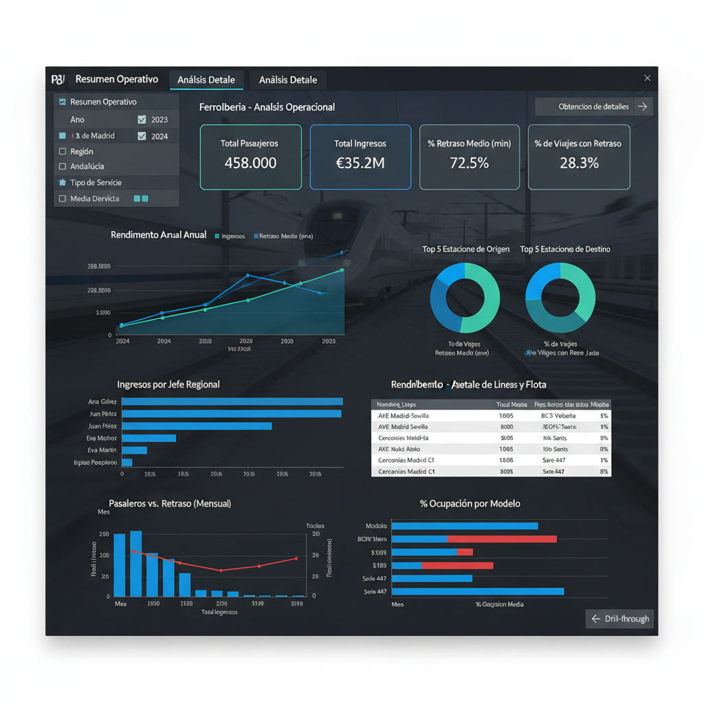
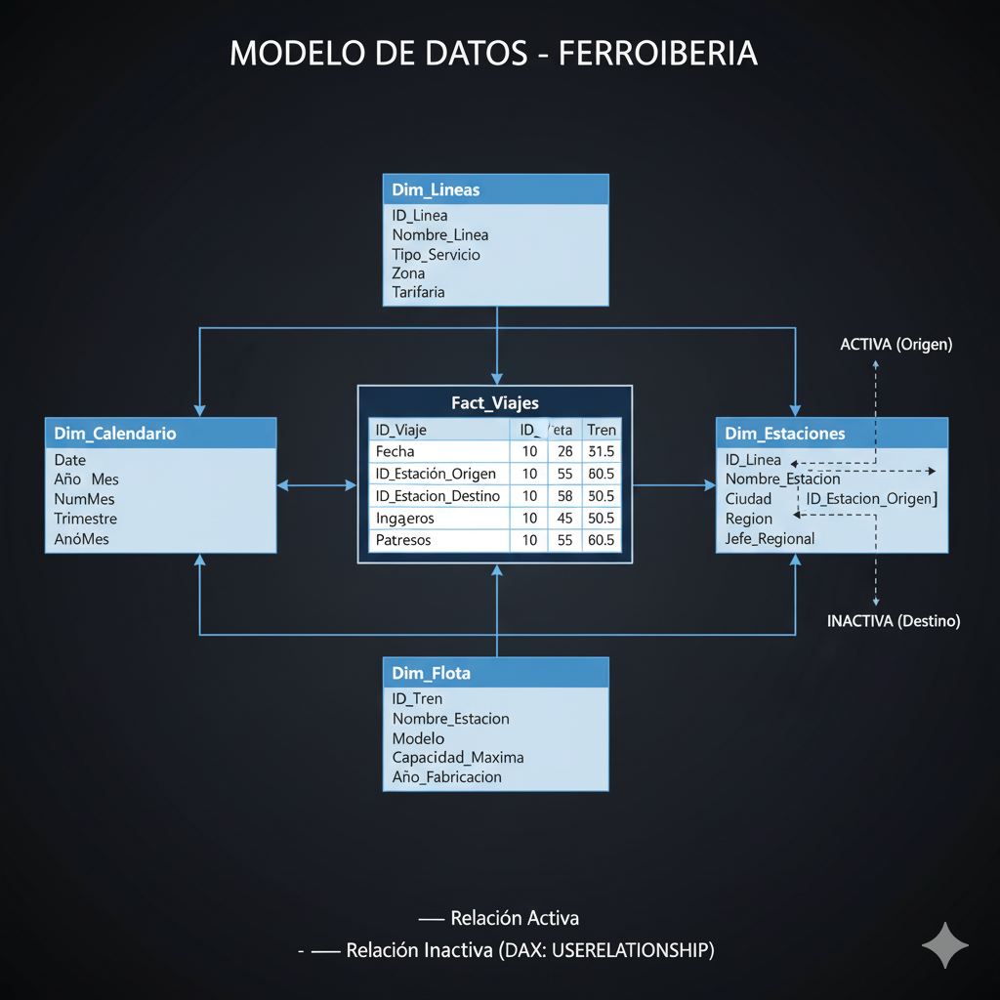

Un manual interactivo para construir tu informe de análisis operativo.
Eres el analista de datos principal de "FerroIberia", la compañía nacional de trenes. La dirección quiere un informe unificado para analizar el rendimiento de los pasajeros, la puntualidad y la ocupación de los trenes, pero no tienen una visión clara de la situación.
Los datos están dispersos en múltiples sistemas y formatos. Tenemos:
Nuestro objetivo es construir un informe de Power BI "de principio a fin". Esto implica:
Descarga los archivos necesarios para completar el ejercicio. A continuación se detalla cada archivo, su propósito y una previsualización de sus datos.
Propósito: Tabla de Hechos (Fact). Contiene las transacciones de viajes del año en curso (formato nuevo).
| ID_Viaje | Fecha | ID_Linea | Pasajeros | Ingresos | Retraso_Minutos |
|---|---|---|---|---|---|
| V-1001 | 2024-01-15 | L-01 | 150 | 3000 | 5 |
Propósito: Tabla de Hechos (Fact). Contiene las transacciones del año pasado (formato antiguo). Requiere renombrar columnas en Power Query.
| Viaje_Num | Fecha_Operacion | Cod_Linea | Pasajeros_Total | Ingreso_Total_EUR |
|---|---|---|---|---|
| H-501 | 2023-01-14 | L-01 | 145 | 2900 |
Propósito: Tabla de Dimensión (Dim). Maestro de Líneas, describe cada servicio (AVE, Cercanías, etc.).
| ID_Linea | Nombre_Linea | Tipo_Servicio | Zona_Tarifaria |
|---|---|---|---|
| L-02 | AVE Madrid-Sevilla | Alta Velocidad | Corredor Sur |
Propósito: Tabla de Dimensión (Dim). Maestro de Estaciones, incluye jerarquía de región y jefe regional.
| ID_Estacion | Nombre_Estacion | Ciudad | Jefe_Regional |
|---|---|---|---|
| E-03 | Madrid-Atocha | Madrid | Juan Pérez |
Propósito: Tabla de Dimensión (Dim). Maestro de Flota, describe cada tren y su capacidad máxima.
| ID_Tren | Modelo | Capacidad_Maxima | Año_Fabricacion |
|---|---|---|---|
| T-20 | S-102 'Pato' | 350 | 2007 |
Propósito: Imagen de la maqueta del informe final. Te servirá como guía visual para el diseño.
Propósito: Imagen del modelo de datos (esquema de estrella) que construiremos.
Esta imagen es una maqueta realista del informe final que construiremos. Te servirá como guía visual durante el ejercicio.
A continuación, se detalla el propósito de cada objeto visual en la maqueta, siguiendo un orden de lectura de arriba a abajo y de izquierda a derecha:
Intención: Limpiar y unificar los datos brutos de diferentes fuentes en un conjunto de tablas limpio y listo para el modelado.
Intención: Construir un modelo de datos robusto que permita que los filtros fluyan correctamente desde las dimensiones a los hechos.
Este es el esquema de estrella que crearemos. Observa la relación de doble rol (activa e inactiva) de la tabla de Estaciones.
Hemos discutido 3 formas de crear tablas de calendario. Aquí tienes un resumen de por qué elegimos este método:
Conclusión: El método DAX `ADDCOLUMNS` es la práctica recomendada por ser el más robusto, eficiente y escalable.
Intención: Crear los KPIs (Indicadores Clave de Rendimiento) que encapsulen la lógica de negocio y sean reutilizables en todo el informe. (Sugerencia: crea una "Tabla de Medidas" para organizarlas).
Código `Dim_Calendario`:
Dim_Calendario =
ADDCOLUMNS (
CALENDARAUTO(),
"Año", YEAR ( [Date] ),
"Mes", FORMAT ( [Date], "MMMM" ),
"NumMes", MONTH ( [Date] ),
"AñoMes", FORMAT ( [Date], "YYYY-MM" )
)
Propósito: Crea la tabla de fechas. `CALENDARAUTO()` escanea el modelo y crea una fila por cada día. `ADDCOLUMNS` añade columnas útiles (Año, Mes, etc.) para poder filtrar.
Medidas Básicas:
Total Pasajeros = SUM(Viajes[Pasajeros])
Total Ingresos = SUM(Viajes[Ingresos])
Total Viajes = COUNTROWS(Viajes)
Retraso Medio (min) = AVERAGE(Viajes[Retraso_Minutos])
Propósito: Agregaciones simples que calculan los totales y el promedio de retraso. `SUM` suma una columna, `COUNTROWS` cuenta filas y `AVERAGE` calcula la media.
Medidas de Rendimiento:
% de Viajes con Retraso =
VAR ViajesConRetraso =
CALCULATE(
[Total Viajes],
Viajes[Retraso_Minutos] > 0
)
RETURN
DIVIDE( ViajesConRetraso, [Total Viajes] )
% Ocupacion Media =
AVERAGEX(
Viajes,
DIVIDE(
Viajes[Pasajeros],
RELATED(Dim_Flota[Capacidad_Maxima])
)
)
`% de Viajes con Retraso`: Usa `CALCULATE` para modificar el contexto de filtro y contar solo los viajes donde `Retraso_Minutos > 0`. Luego `DIVIDE` de forma segura (evita errores de división por cero).
`% Ocupacion Media`: Usa `AVERAGEX` para iterar fila por fila de la tabla `Viajes`. En cada fila, usa `RELATED` para "saltar" de la tabla `Viajes` a `Dim_Flota` (a través de la relación) y coger la `Capacidad_Maxima` de ese tren. Finalmente, calcula el promedio de todas esas ocupaciones individuales.
Medidas de Time Intelligence:
Ingresos PY =
CALCULATE(
[Total Ingresos],
SAMEPERIODLASTYEAR(Dim_Calendario[Date])
)
Crecimiento Ingresos YoY =
DIVIDE( [Total Ingresos] - [Ingresos PY], [Ingresos PY] )
`Ingresos PY`: Usa `SAMEPERIODLASTYEAR` (MismoPeriodoAñoAnterior) para coger el contexto de fechas actual (ej. "Marzo 2024") y desplazarlo automáticamente un año atrás ("Marzo 2023"). Esto solo funciona si has marcado tu `Dim_Calendario` como tabla de fechas.
Medida de Relación Inactiva (El Reto):
Viajes por Destino =
CALCULATE(
[Total Viajes],
USERELATIONSHIP(
Dim_Estaciones[ID_Estacion],
Viajes[ID_Estacion_Destino]
)
)
Propósito: Por defecto, `[Total Viajes]` se filtra por `ID_Estacion_Origen` (la relación activa). Esta medida usa `USERELATIONSHIP` para "encender" temporalmente la relación inactiva con `ID_Estacion_Destino` solo durante este cálculo.
Intención: Construir un informe de 2 páginas que presente los datos de forma clara y permita la exploración.
Intención: Añadir capas de interactividad profesional al informe.
Vamos a crear dos botones en la Página 1 para alternar un gráfico entre "Ver Ingresos" y "Ver Pasajeros".
Vamos a filtrar *todo el informe* (todas las páginas) para que solo muestre datos de "Alta Velocidad".
Intención: Usar el informe interactivo final para encontrar las respuestas a preguntas de negocio específicas.
{kind=link}
{kind=link}